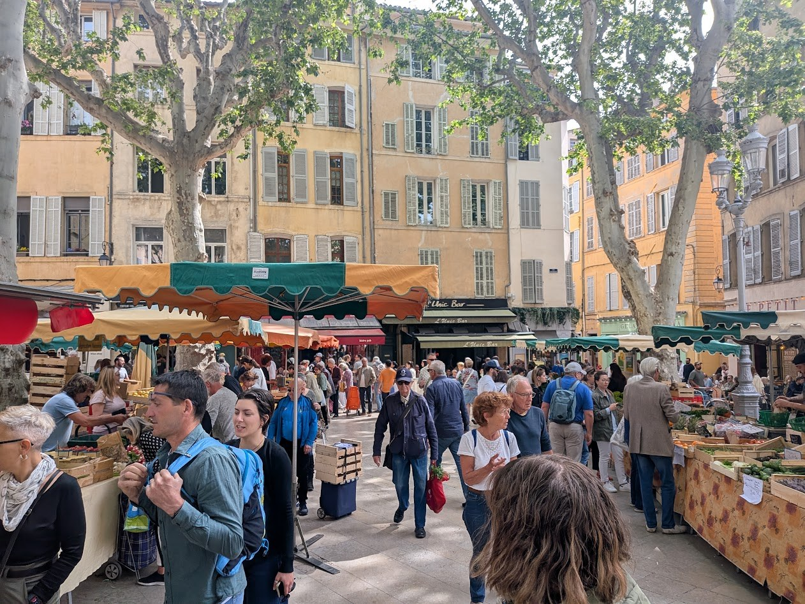

Numbers and prices
Why is 97 one of the hardest prices to catch in a French shop?
On a visit to ITER you will buy things: a coffee, a sandwich, a bus ticket, a postcard. Every time, someone tells you a price in French, quickly. In this lesson you learn to understand that price and to say it yourself. This is a scenario for practice, and every price in the lesson is invented.
Prior knowledge
- Greetings and polite vouschapter Bonjour ! Introducing yourself
Core path: follow the steps in order. Tasks marked Optional give extra practice. Optional tasks: 2.
Think about it
The morning before your visit to ITER, your group walks through the market in Aix-en-Provence, about 35 kilometres south of the site. You buy two lemons and a bag of apricots for the bus. The seller weighs them, smiles and tells you the price, fast. You hear four words, and the only one you recognise is euros. Behind you, other people are waiting.
How can you find out what to pay, and how can you be sure that you heard it right?
Sentence starters
- In Finnish, 23 is built from …
- English and Finnish both put … first.
- If I do not catch a price, I can …
- A number that looks easy but could be hard is …, because …
Think about it: how numbers are built
Finnish says kaksikymmentäkolme (two-ten-three), Swedish tjugotre, English twenty-three. How are these numbers built? Older English also counted in twenties: four score and seven (Lincoln, 1863) was 87. Then think about the market: what can you do if you do not catch a price?
Discuss with a partner for three minutes, then write a few lines together.
Model answer
All three languages build 23 from the tens and then the units: kaksikymmentä + kolme, tjugo + tre, twenty + three. Four score and seven is $4 \cdot 20 + 7$ = 87, so it multiplies and then adds. If we do not catch a price, we can look at the scales or the till, hold out a bigger note, ask the seller to repeat it or to write it down, or show our phone's calculator.
Assess your own answer
Tick the points your own answer already contains.
Review the theory summary.
Predict
Make your predictions before investigating 2 questions
Prediction 1: seventy
Prediction 2: a price
Investigate
Listen: the numbers from 0 to 100
Listen to each line, first slowly and then at normal speed, and repeat it aloud. The hints in italics are written with Finnish letters: capitals show the stressed syllable, and õ, ã and ẽ are nasal vowels. Watch the last five lines carefully: they are the surprise of French numbers.
Watch: from 61 to 100
Now listen to a second voice. Watch the chapters from 61 to 100 (about a minute and a half). Say each number aloud after the speaker. Write down the three numbers that you found hardest to hear or to say, and check them in the list above.
Work out the numbers
These numbers were not in the list. Work them out from their parts.
What did you notice?
Theory summary
Counting to 100
Most French numbers are built like Finnish ones: you put the parts together.
- 0–16 have their own words: zéro, un, deux, trois, quatre, cinq, six, sept, huit, neuf, dix, onze, douze, treize, quatorze, quinze, seize.
- 17–19 are ten and seven and so on: dix-sept, dix-huit, dix-neuf.
- The tens to 60: vingt, trente, quarante, cinquante, soixante. Then you add the units with a hyphen: vingt-deux, trente-cinq. For 21, 31, 41, 51 and 61 you say and one: vingt et un, soixante et un.
From 70 to 99, France counts with twenties, a little like the old English four score ($4 \cdot 20$) for 80:
| Number | French | How it is built |
|---|---|---|
| 70 | soixante-dix | $60 + 10$ |
| 71 | soixante et onze | $60 + 11$ |
| 75 | soixante-quinze | $60 + 15$ |
| 80 | quatre-vingts | $4 \cdot 20$ |
| 81 | quatre-vingt-un | $4 \cdot 20 + 1$ (no et) |
| 90 | quatre-vingt-dix | $4 \cdot 20 + 10$ |
| 97 | quatre-vingt-dix-sept | $4 \cdot 20 + 17$ |
| 100 | cent |
So from 70 and from 90 you count on with the numbers 10–19. Quatre-vingts has an s only when no number follows it.
In Belgium and Switzerland people say septante (70) and nonante (90). In three Swiss cantons (Vaud, Valais, Fribourg) 80 is huitante. In France you will hear soixante-dix and quatre-vingt-dix.
Prices in euros
France uses the euro (€), and one euro is 100 centimes. In France people say centime, not cent. French writes prices with a decimal comma and puts the euro sign after the number: 2,50 €, 0,90 €.

To say a price, put euros between the euros and the cents:
- 2,50 € = deux euros cinquante
- 1,80 € = un euro quatre-vingts
- 0,90 € = quatre-vingt-dix centimes
When you do not catch a price, ask. These phrases are polite, with vous:
Sounds of the numbers
The hints in italics use Finnish letters, as in the first lesson: capitals show the stressed syllable, õ, ã and ẽ are nasal vowels, è is an open e, ö is close to Finnish ö and ž is the s of English pleasure.
- Final consonants. Six and dix end in a clear s when they stand alone (SIS, DIS), but the s is silent before a consonant: six croissants si krwa-SÃ. Sept is SET and huit is YIT: the French u is the Finnish y.
- Vingt and cent. The final gt and t are silent: VẼ, SÃ. In 21–29 the t of vingt is heard (vẽt-DÖ), but never in 81–99: quatre-vingt-un is ka-trö-vẽ-Ẽ.
- Liaison with euros. Euro starts with a vowel, so a silent final consonant is linked to it: deux euros dö-zö-RO, trois euros trwa-zö-RO, six euros si-zö-RO, dix euros di-zö-RO, un euro ẽ-nö-RO, vingt euros vẽ-tö-RO.
- Stress at the end. A French number is one long word with the stress on its last syllable: quatre-vingt-dix-sept ka-trö-vẽ-di-SET. Listen for the end: it tells you the units.
Summary
| You see | You say |
|---|---|
| 21, 71 | vingt et un, soixante et onze: et only in 21, 31, 41, 51, 61 and 71 |
| 70–79 | soixante-dix … soixante-dix-neuf: $60 + 10$ … $60 + 19$ |
| 80 | quatre-vingts: 4 · 20, with s |
| 81–89 | quatre-vingt-un … quatre-vingt-neuf: no s, no et |
| 90–99 | quatre-vingt-dix … quatre-vingt-dix-neuf: $4 \cdot 20 + 10$ … $4 \cdot 20 + 19$ |
| 2,50 € | deux euros cinquante: euros in the middle |
| 0,90 € | quatre-vingt-dix centimes: under one euro, centimes |
| a price? | C'est combien ? (one thing), Ça fait combien ? (the total) |
Back to your predictions
Compare your two predictions with the theory. Then answer the opening question in English in one or two sentences: why is 97 one of the hardest prices to catch in a French shop?
Would you change your prediction?
Apply
Listen in pairs: what does it cost?
Work in pairs with one device each. The French lines are hidden behind Show the text: the listener does not open them until after Check. Partner A plays the five lines of table A, one at a time (normal speed first, Slowly if B asks). Partner B does not look at A's screen and chooses the prices in the list under table A. Then swap: B plays table B, and A chooses in the list under it. (If a browser has no French voice, the text is shown and the partner reads the lines aloud instead.) Before you press Check, the listener may ask once: Vous pouvez répéter, s'il vous plaît ?
Read the receipt
Asking about prices
Role-play: at the market
Work in pairs. A sells fruit at the market in Aix: write four fruits and a price for each on paper (between 0,50 € and 9,90 €) and do not show it. B buys two or three things: greet, ask the prices, ask for the total, check that you understood, pay and say goodbye. Then swap roles with new prices. Speak without reading if you can.
Word bank
Bonjour, madame / monsieur, les citrons (lemons), les abricots (apricots), les pêches (peaches), les tomates, un melon, le kilo, C'est combien ?, Ça fait combien ?, Vous pouvez répéter ?, Plus lentement, s'il vous plaît, Voilà, Merci, au revoir
Sentence starters
- Bonjour, monsieur. Les citrons, c'est combien ?
- Et le melon, c'est combien ?
- Je voudrais un kilo d'abricots, s'il vous plaît.
- Ça fait combien ?
- Pardon, vous pouvez répéter, s'il vous plaît ?
- Voilà. Merci, au revoir !
The seller: Bonjour ! Vous désirez ?, Le kilo de citrons, c'est trois euros quarante., Ça fait … euros …, Merci, bonne journée !
Role-play: your dialogue
After both rounds, write the dialogue of one round in French, at least six lines, with the prices in words. Write each price in digits too.
Perform the role-play with a partner first, then write it together.
Model answer
- A : Bonjour ! Vous désirez ?
- B : Bonjour, madame. Les abricots, c'est combien ?
- A : Quatre euros quatre-vingt-dix le kilo. (4,90 €)
- B : Pardon, vous pouvez répéter, s'il vous plaît ?
- A : Quatre euros… quatre-vingt-dix.
- B : Je voudrais un kilo d'abricots et deux citrons, s'il vous plaît. Ça fait combien ?
- A : Alors, les abricots, quatre euros quatre-vingt-dix, et les citrons, un euro vingt. Ça fait six euros dix. (4,90 € + 1,20 € = 6,10 €)
- B : Voilà. Merci, au revoir !
- A : Merci, bonne journée !
Assess your own answer
Tick the points your own answer already contains.
Review the theory summary.
Optional Extension: phone numbers
French phone numbers have ten digits and are written in five pairs: 06 39 98 56 78. They are usually said in pairs too, so you need every number from 0 to 99. Numbers that start with 06 or 07 are mobile phones. Listen to the two numbers (they come from ranges that are never given to real phones), then dictate an invented number of your own to a partner, pair by pair, and check what they wrote.
Optional Extension: vowel combinations
Many number words contain two vowels that make one sound: trois and soixante (oi), deux and neuf (eu), douze (ou), treize and seize (ei). Watch the video and note which combinations it shows and how each one sounds. Then find one number word for each combination you noted, and say it to your partner.
Check your understanding
1. A price by ear
2. Writing a price the French way
3. Linking before a vowel
4. Write: what did it cost?
After the visit you send a French text message to a friend: what you bought at a café in Aix, the price of each thing in words, and the total. Write three to five sentences.
Model answer
Salut ! Au café, à Aix, je prends un jus d'orange et un sandwich. Le jus d'orange coûte trois euros soixante-dix (3,70 €) et le sandwich quatre euros quatre-vingt-quinze (4,95 €). Ça fait huit euros soixante-cinq (8,65 €). C'est cher, mais c'est bon ! À bientôt !
Assess your own answer
Tick the points your own answer already contains.
Review the theory summary.
Photographs and videos
- French NUMBERS 1-100 (Les NOMBRES en Français 1-100) (embedded video). Juancker´s Languages. source, Standard YouTube licence; embedded with YouTube's player, not copied
- French Pronunciation: French vowel combinations (embedded video, optional). Learn French. source, Standard YouTube licence; embedded with YouTube's player, not copied
- Morning market in Aix-en-Provence. Lauri Hellsten. Photograph supplied by the author (2026-11-01), © Lauri Hellsten, all rights reserved; used with the author's permission